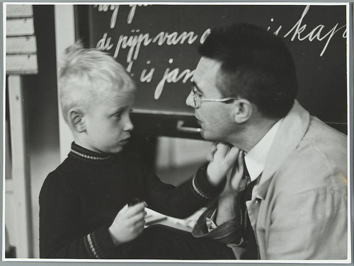

2015-12-12
許多人為了弭平教育落差而提供開放教育資源。一位介紹開放教育資源與創用CC授權的開放計畫志工Kasyoka Mutunga就說：「對於多數人而言，創用CC授權只是一個法律工具—一個基於著作權所建構出來的東西。但是當你實際進入場域，你會看到它如何影響學生的生活，這就不再只是一個法律工具而已。它會成為人們用來提升自己的裝備。它不再只是關在象牙塔內所發展出來的法律物件，它真的會改變生活。」本文將介紹幾個開放教育投入者和使用者的小故事，帶大家進入這個因開放授權有所改變的場域。
Daniel Branan是線上科學實驗室北美網絡的指導人，他們的目標是協助低收入學生也能獲得科學相關工作。在美國，家庭背景不好的大學生可能因為有工作、家庭責任或住在偏遠地區，導致無法完成學位，甚至影響未來求職。因此，他們採用開放資源軟體，善用他人以創用CC授權的課程教材，並將所有為了這個研究室所設計的課程都以創用CC 姓名標示授權釋出。未來希望能進一步讓這些課程藉由網路觸及中小學課程，甚至是身心障礙人士。

本照片：無已知版權。
Piya Sorcar博士是TeachAIDS的創辦人與執行長。TeachAIDS由醫學、公共衛生與教育的專家共同合作開發，是經過深度研究且適用各地文化的愛滋病防衛動畫軟體。這些素材都以創用CC姓名標示—非商業性—禁止改作授權釋出，讓個人及組織可以輕易散佈，目前這些材料已經有15種語言並廣布70個國家。肯亞的Lena Koh正因為TeachAIDS免費，才能在擔任愛滋教育的實習生時可以使用。他說：「我想，免費取用TeachAIDS讓願意幫忙免費翻譯教材的不同機構和個人產生興趣，導致TeachAIDS可以這麼快就有這麼多不同語言的字幕。」
TeachAIDS第一個客製化的版本在2010年於印度安得拉邦發布，當地愛滋病患人數是印度最高的。性教育在當地是個禁忌，創用CC授權讓教材可以免費供上千所急切需要教育的學校取用及傳播。肯亞當地的老師Elijah也表示：「我們面臨的挑戰就是資訊的散佈。社群缺乏關於這個疾病的教育…現在我們可以教導我們的同儕關於愛滋病。現在他們缺乏如何預防愛滋病的知識。」缺乏資訊通常帶來汙名與誤解，TeachAIDS可以協助打破迷思和誤解。
David Lippman教授寫了兩本數學教科書及建立開放資源的數學評量與課程平台iMathAS，他幾乎所有東西都以創用CC姓名標示—相同方式分享授權釋出。他說：「我就坐在這裡，面對學生需要花150元美金購買教科書的事實。然而，我們只用了這本書的一半而已，我們甚至沒有使用書裡面的練習題。學生為了他們甚至都不想上的課支付150元美金購買指定書籍，這感覺起來挺蠢的。」因此，David決定親自編寫免費的教科書供學生使用。
他發現使用開放授權的教科書後，學生會出現一些不同的行為，像是會主動快速的從頭到尾看完教科書，指出需要修改的錯誤。另外，David在2013年發現自己的教科書的範例題目被遠在1300哩外的James Sousa用於教學影片中。而且後來加州Santa Ana社區大學也使用他的教科書及James的影片，並為影片加上字幕。這一切都在他未知的情況下發生，也顯示了開放授權的影響力。David說：「我不論做什麼都不會是完美的，所以我要確保人們能進行改變或改善，甚至可以貢獻回來。」
除了對於弱勢學生的幫助，開放教育資源的提供者也會在開放的過程中有新的體悟，產生始料未及的收穫。
塞內加爾El Hadji Malick Sy高中的Papa Samba Dieng Diallo一直到想要解決一個社會問題：「如何讓散佈在許多地方、使用不同語言的非洲人聚在一起分享知識？」有一天，他在網路上找到MIT的開放式課程及Youtube影片，受到這些開放教育資源的啟發，想到如果非洲各地都學會英文，就能以此和其他地區的人溝通。於是，Papa Samba Dieng Diallo開始和學校的英語社團合作製作英語教學影片，採用創用CC授權釋出，希望藉此讓更多人能以英文溝通。或許，他從來沒想過，這個社會問題的解答不論起點或終點都與開放教育資源有關。
Jon Festinger是一個律師，也是英國哥倫比亞大學的老師。他為了他教的電玩法課程設置一個網頁，並採用創用CC姓名標示授權。Jon說，由於知道課程網站會被他人看到即使用，因此會以高標準要求自己，課程與資料會持續更新。2015年1月，他將開設「(數位)創意的法律限制」這門課，同樣也會採用開放授權。
Jon認為法律與教育都是混搭文化，法律判斷通常需要根據前例，教育也需要仰賴集體知識。而且，做學術其實就是一個信仰開放資源的系統，學者彼此互相引用，同時相信自己是為了全體人類的利益而投入。而且他意外發現，在開放課程網站後，由於許多人透過這個網站知道他是個有能力且在教學上無私的人，而獲得很多演講邀約。這或許也是他當初基於開放理念開放課程網站時，從未想過的收穫。
參考資料：